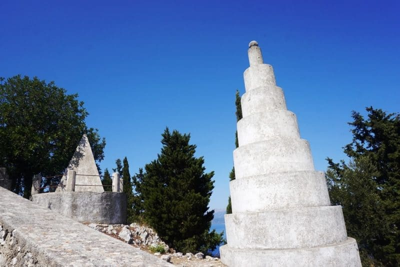

terenceithaque

Exogi (hors des terres) est un village de l'île d'Ithaque. Il se situe à 22 km de Vathy, sur la montagne Neion, à 340 mètres d'altitude.
Ce pittoresque village est construit en amphithéâtre, en dominant la baie et les îles environnantes.
L'une des tours présentes à Exogi
cliquez ici.
En savoir plus sur Exogi sur Greeka (site en Anglais).
Vous cherchez le contenu d'une plage en particulier? Cliquez ici pour accéder à l'index des plages.
Vous n'êtes pas sur la page que vous cherchez? Dirigez vous vers l'index.
Vous vous posez des questions sur le contenu des mises à jour du site? Cliquez ici pour voir toutes les infos sur les mises à jour.